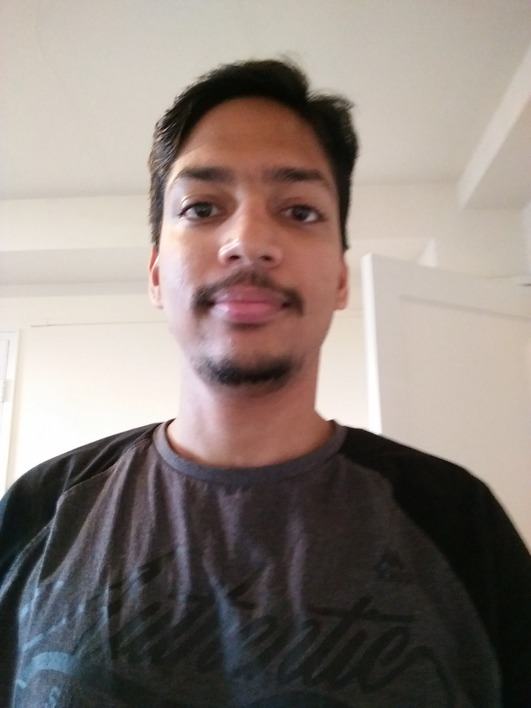

<div class="container">
  <div class="row">
    <div class="col-md-4" style='margin-top:20px'>
      <div class="imgAbt">
        
      </div>
    </div>
    <div class="col-md-8" style='margin-top:20px'>
      <p>
      Hi, I'm Apoorv Jagtap. I am a Masters student in <a href="http://www.cse.sc.edu/" target="_blank">Computer Science and Engineering</a> at <a href="http://www.sc.edu/" target="_blank">University of South Carolina</a>, working on robotics in the <a href="http://www.afrl.cse.sc.edu/" target="_blank">AFRL Lab</a>. 
      </p>
      <p>
      I studied <a href="http://vit.edu.in/admissions/under-graduate/electronics" target="_blank">Electronics</a> in my undergraduate at <a href="http://vit.edu.in/" target="_blank">Vidyalankar Institute of Technology</a>, interested in <a href="https://en.wikipedia.org/wiki/Robotics" target="_blank">Robotics</a>, and its applications to real world. I began my graduate study in USC CSCE in Fall 2015 .</p>

      <p>Apart from college studies and work, I enjoy reading, watching movies and eating good food.
      </p>
    </div>
  </div>
</div>
